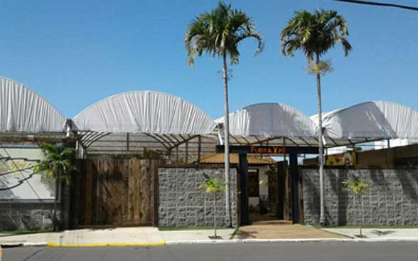
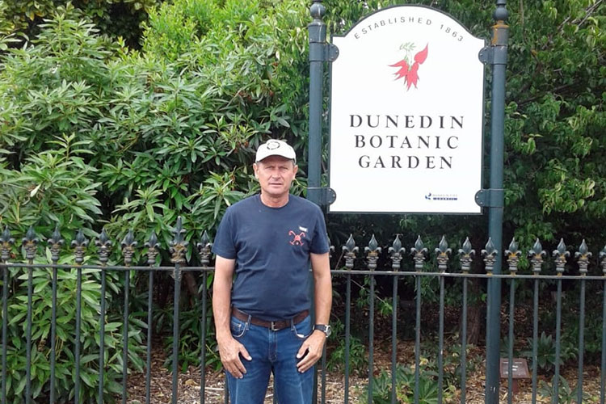

O que é FloraYpê? O que fazemos?
Desde 1991 em Americana nos destacamos por nossas variedades e qualidades em nossos produtos! Temos uma ampla escala de produção própria com grande diversidade de plantas ornamentais em Holambra, fazemos de tudo para satisfazer nosso clientes com a grande diversidade de produtos que oferecemos, Atendemos profissionais, lojas e Garden Centers em todo território nacional.Nossas criações paisagísticas se destacam pela originalidade e harmonia. Os projetos assinados por LUIZ SELIN são únicos e excepcionais, a realização envolve todo uma estética equilibrada valorizando o estilo abordado para o projeto, a seleção das vegetações são feitas cuidadosamente para valorizar o ambiente e suprir a necessidade do cliente.
Ver Mais>

Luiz Selin - Biólogo Paisagista
Luiz Selin nasceu em uma comunidade agrícola em Santa Maria Da Serra, no interior de São Paulo, e foi fascinado pela botânica. Aos 4 anos, seu prazer era plantar sementes em um canteiro no quintal de sua casa. Quando completou 15 anos entrou para um curso de Técnico Agropecuário em Regime Internato.Cursou Biologia e se especializou na área de Botânica. Imediatamente buscou mais e mais especializações com cursos de paisagismo em jardins inteligentes na Inglaterra Royal Botanic Garden Kew , Royal Botanic Garden Endburg 1992, New York Botanic Garden 1993...
Ver Mais>

Quais as vantagens do Paisagismo? Como fazer?
O paisagismo é uma arte que transforma espaços ao ar livre em ambientes funcionais e esteticamente agradáveis, através da combinação de elementos naturais, como plantas e água, cria-se um ambiente harmônico e agradável, a criação dos projetos é pensado para valorizar o ambiente e atender às necessidades dos clientes, seja em áreas residenciais ou comerciais.Além de embelezar, o paisagismo também contribui para a preservação do meio ambiente, tornando o espaço muito mais fresco e agradável. A escolha de plantas nativas e o planejamento de áreas verdes ajudam a conservar a biodiversidade e o eco sistema das plantas, sendo muito mais que uma área verde.
Ver Mais>